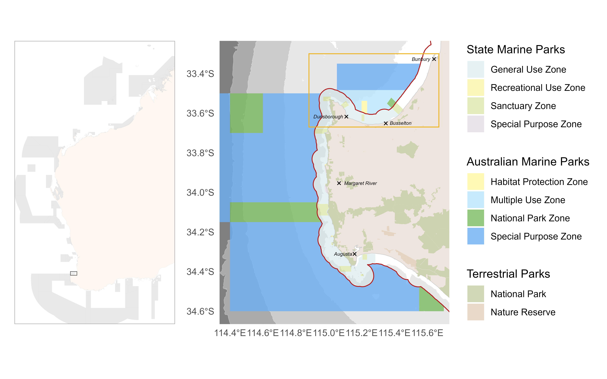
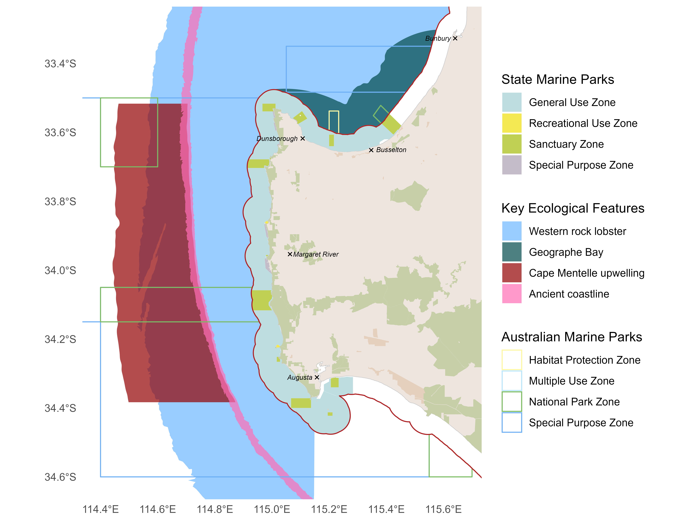
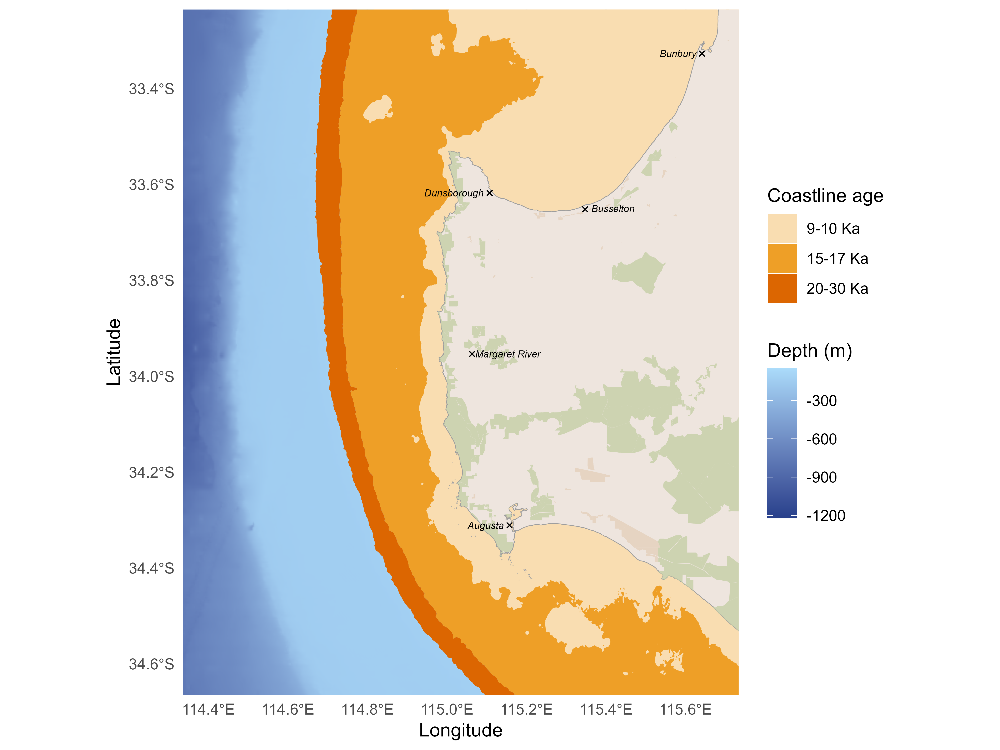
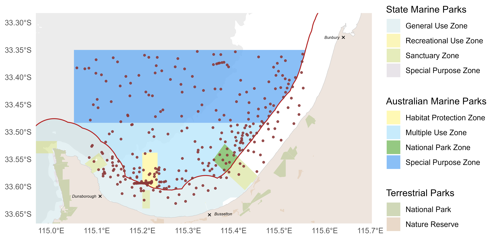
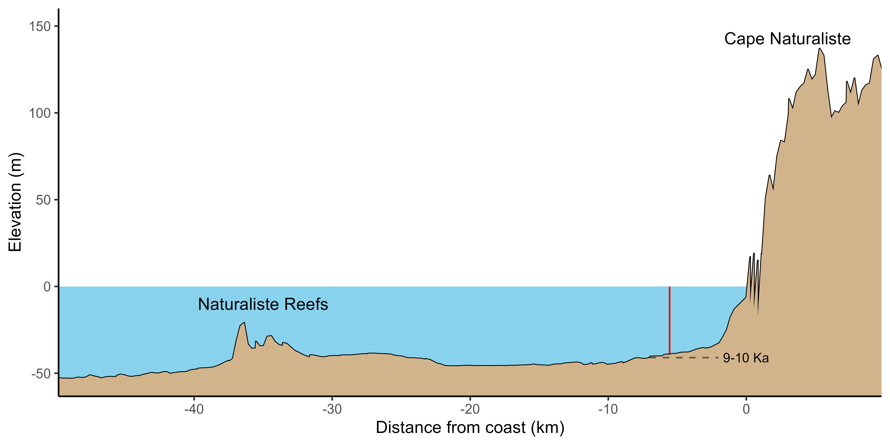
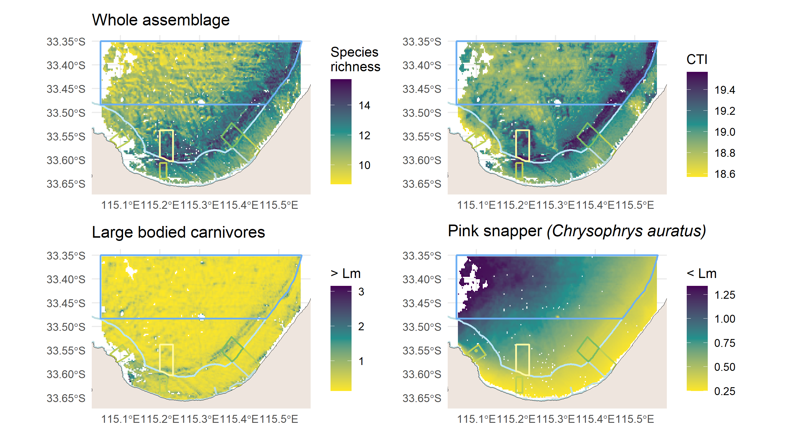
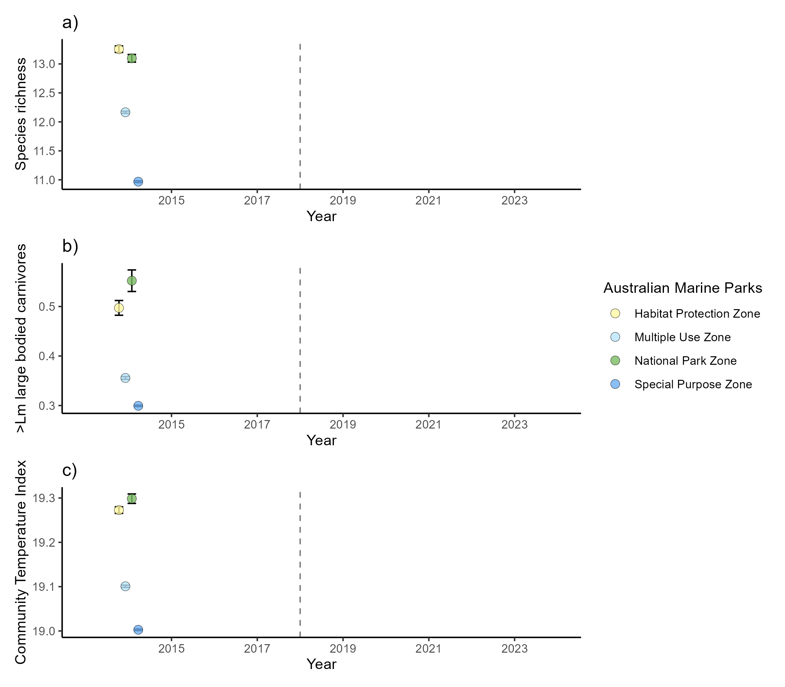

GeographeAMP-report
1 Existing knowledge
1.1 Background
1.2 Features and values of the Geographe Marine Park



1.3 Pressures
2 Latest survey aims, design and methods
2.1 Aims and objectives
2.2 Discovery questions: interaction of environmental values and pressures, rationale for future surveys and monitoring
2.3 Survey design
2.4 Survey stages

3 Latest results and discussion
3.1 Bathymetry and relief
3.1.1 Bathymetry and significant seafloor features

3.2 Benthic biota and habitat extent
3.2.1 Distribution of dominant habitat classes
3.2.2 Broader study area - habitat extent
3.2.3 Characterization of significant seafloor features
3.3 Fish assemblage
3.3.1 Broader study area

Spatial patterns in the distribution of key fish metrics for the Geographe Marine Park highlight increased species richness along reef features that run through the National Park and Habitat Protection Zones (Figure 6).

Temporal trends of key fish metrics for the Geographe Marine Park highlight increased abundance of mature large bodied carnivorous species in the National Park Zone (Figure 7).